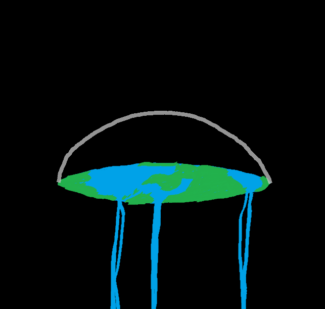
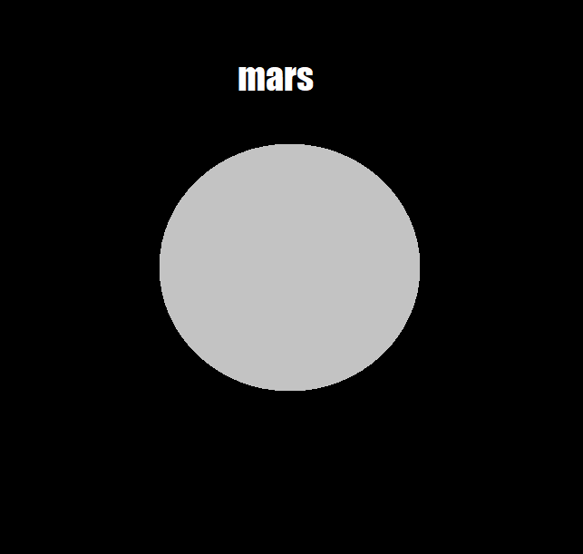
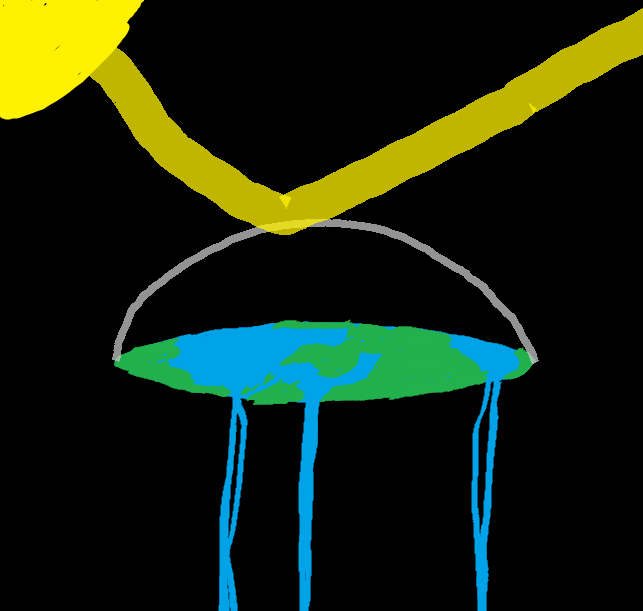

Disclaimer: I'm just writing this to make the assignment more fun for me. I'm not actually a flat-earther I swear please don't tell my mom
My sources tell me that the Earth is flat and I believe them.
Look it's me getting woke, I've stopped being sheeple.
Here's a wonderful documentary detailing the important figures behind the Flat Earth re-recognition movement.
And in no particular order, here are some well known flat earth supporters
(they weren't known for being flat earthers, they might not even be flat earthers but you can't tell me they're not)
More working theories from the flat earth sociery
|  |  |
|  |